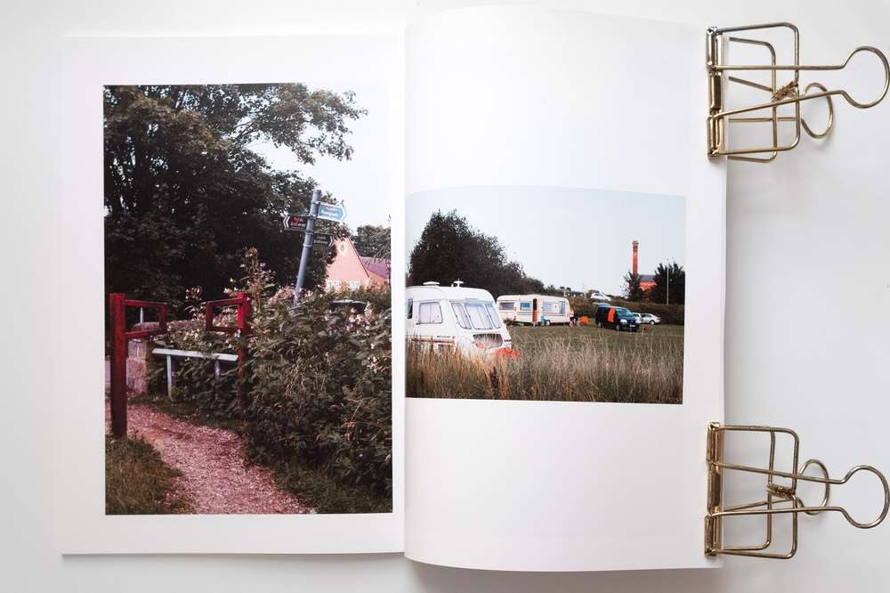

Rich's digital garden
Issue:015 Of nettles and borage
Hello Roadside Picnic subscribers.
 Weathered and exposed Hawthorn at the bottom of my edgeland path
Weathered and exposed Hawthorn at the bottom of my edgeland path
“You can tell lockdown is over. Not not a soul for miles,†said a passerby, patiently letting us pass on the single narrow path within my routine interstitial edgelands. They are right. I have seen far fewer walkers. This absence extends to the nearby recreation ground where during stringent lockdowns I could observe: golf, football, picnics, metal detecting, micro aircraft and remote control cars. From the first lockdown the edgelands became congested as a place to conduct leisure activities and as an interfacial corridor to the countryside.
Now that the restrictions have eased perhaps my edgelands will return to a quiet disregard. To days when walking the town's boundary was a solitary walk. Ironically, spring is now shaping the landscape, filling voids with new growth and lining the paths with blossom. The landscape feels more alive. Lockdown users are missing out.
Of all the flora, weeds are the prevalent plant taking hold. Even on the disturbed ground. A mound of earth by the side of a path, agricultural vandalism left disregarded in the interstice boundary, has sprouted nettles and docks. They grow between embedded waste.
 Docks and nettles
Docks and nettles
White and red dead-nettles line the pathway. Common and widespread, guidebooks often state they are found on wasteland. While adding colour to the path, they are beneficial for insects like the garden tiger moth -though it is still too cold for their caterpillars just yet.Â
 Dead Nettle
Dead Nettle
Borage, a hairy blue-flowered weed, grows on the interstice between the field and the end of the road. It seems to prefer sheltered spots, under the hedgerow. Like all of the above-mentioned plants, Borage is credited as being found on wasteland.
 Borage
Borage
 Interstice space of borage
Interstice space of borage
The connection between these plants and wasteland demonstrates a cultural disregard. By labelling them as weeds we are classifying them as inferior. Richard Mabey, in his brilliant book Weeds, surmises the association as vegetable trash.
Any plant growing in such shabby surroundings becomes a weed. They’re the victims of guilt by association, and seen as sharing the dubious character of the company they keep. If plants sprout through garbage they become a kind of litter themselves. Vegetable trash.🛈
The process of placing plants into a dichotomy of desirable and renounced is part of the wider cultural interpretation of nature. Mabey points to the nature-culture dichotomy and our short-sighted attempts to organize nature.
How and why and where we classify plants as undesirable is part of the story of our ceaseless attempts to draw boundaries between nature and culture, wildness and domestication. 🛈
Can photography be used to break down these boundaries, to give value to these plants? Numerous have tried. My friend Kim Watson produced a hand made book/zine titled the garden weed project,of which I'm lucky enough to own a copy. Created during the first lockdown, Kim used weeds from her garden as subjects for Lumen contact prints exposed with the sun and left unfixed. The process highlights the plants’ forms and delicate structures, saturated in eye-catching blue and brown tones.
 A spread from the Garden Weed Project
A spread from the Garden Weed Project
I want to do a similar project, but unsure what the process should be. Large format macro, the Anthotype process? Preferably, the core methodology should highlight undesirable weeds and reconstruct them as desirable.Â
Zine: I got my hands-on a zine produced by my friend @connorjirving.Â
Titled Flâneur, the French term for an observer of contemporary urban life, Connor returned to his hometown as a visitor. He engaged nostalgic urban scenery with a psychogeographic methodology capturing candid street photography and banal new topographic imagery.
Here are some of my favourite spreads.
 The invasive buddleia, a plant that escaped Kew gardens in the 1890’s next to a permit sign.
The invasive buddleia, a plant that escaped Kew gardens in the 1890’s next to a permit sign.
To the left are Himalayan balsam, another invasive unwanted plant, and travellers.
{kind=link}
 Empty town buildings; a stop sign for the economic decline
Empty town buildings; a stop sign for the economic decline
 Gardens are always interesting cultural spaces, they say a lot about their custodian.
Gardens are always interesting cultural spaces, they say a lot about their custodian.
The photographer and Flâneur: Susan Sontag defines the photographeras an armed flâneur seeking the subversive underlining rather than the authorities suggested identity. The armed flâneur is an archetype photographer dating to the medium's inception.Â
 On Photography, Sontag, page 55
On Photography, Sontag, page 55
Reading: with each season comes habitual new nonfiction concerning British landscape and nature, usually accompanied by a Robert Macfarlane blurb or the words Wainwright prize on the front cover. A new twist or a revised gaze, the constant churning can seem overwhelming creating choice paralysis. For this, I am going to read the influential fathers of contemporary landscape-nature writing, Roger Deakin and Richard Mabey (I'll probably get round to Mark Cocker at some point too).Â
For now, I'm reading Roger Deakin's notes from Walnut Tree Farm and Richard Mabey's weeds.The latter is relevant given the time of year.
There is an interesting set of photographs of Roger Deakin’s Walnut Tree Farmin places journal by Justin Partyka. They match the book’s imagery.
Thanks for reading, see you next week.
This article is from my newsletter. Consider subscribing, it's free and weekly.
Created
18/04/2021
Topics
Roadside Picnic
Weeds
Urban Spaces
Zine